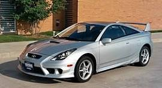

HISTORIA
nuestra historia se remonta hace mas de una decada cuando un joven inicio su sueño de tener su propia marca automovilistica, toyota empezo a hacer sus primeros automoviles para asi sacarlos a la venta, no fue facil ya que era el inicio de algo grande toyota queria que fuera reconocido por crear autos duraderos y resistentes, iban por esa reputacion tubieron problemas ya que un modelo daba muchos problemas de motor, ya que el objetivo era ahorrar combustible el motor era demaciado frajil ocacionando que se rompiera en la mayoria de modelos. pasaron varios años, y toyota estaba a punto de quiebra, llegaron al punto de pensar en vender la marca, pero resistieron y sacaron su modelo estrella la rav4 este producto lanzo a la marca generando millones de ventas, lograron salir de estar cerca de la bancarota a llegar a la marca mas vendida en el mundo. la marca japonesa ahora es reconocida por vender los autos mas resistentes y ahorradores de combustible.
CRONOLOGIA
Auto historico
este es el primer auto deportivo de la marca
TOYOTA CELICA
MISION
nuestra mision es hacer los mejores automoviles a costos bajos y ahorrativos para todos
VISION
toyota se ha comprometido en hacer autos mas ahorrativos gastar un litro por 100km
LOGROS
43 KM CON 1 LITRO DE COMBUSTIBLE